APARTAT 01
Gestió d'usuaris i grups
Aquest apartat forma part del Sprint 2. Encara no s'hi ha incorporat documentació perquè les captures i les explicacions facilitades fins ara corresponen a la gestió de processos.
↑ Tornar a l'índexAPARTAT 02
Gestió de permisos
Aquest apartat forma part del Sprint 2. Encara no s'hi ha incorporat documentació perquè les captures i les explicacions facilitades fins ara corresponen a la gestió de processos.
↑ Tornar a l'índexGESTIÓ DE PROCESSOS
Preparació dels scripts
En aquesta pràctica treballarem amb diversos scripts que simulen processos del sistema. Abans d'executar-los, hem de donar-los permisos d'execució i comprovar que els fitxers es troben al directori de treball ~/missio.
1. Donar permisos d'execució
Amb la comanda chmod +x donem permís d'execució als scripts de la pràctica. Després, utilitzem ls -l per comprovar els permisos i els noms dels fitxers.
chmod +x backup_nocturn espia descarrega.sh sospitosos.sh
ls -l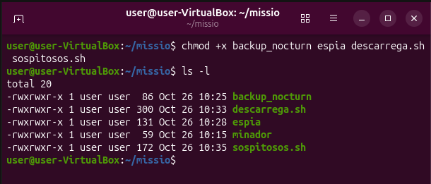
2. Executar l'script que inicia la missió
Executem sospitosos.sh. El missatge que apareix al terminal indica que el servidor comença a anar lent. Això inicia la simulació dels processos que haurem d'identificar i gestionar.
./sospitosos.sh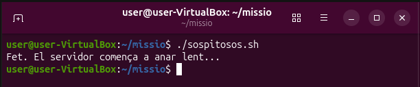
GESTIÓ DE PROCESSOS
Inspecció dels processos
1. Consultar l'arbre de processos
La comanda pstree mostra els processos en forma d'arbre i permet observar les relacions entre els processos pare i els processos fills. A la sortida es poden identificar els processos backup_nocturn, espia i altres processos de la simulació.
pstree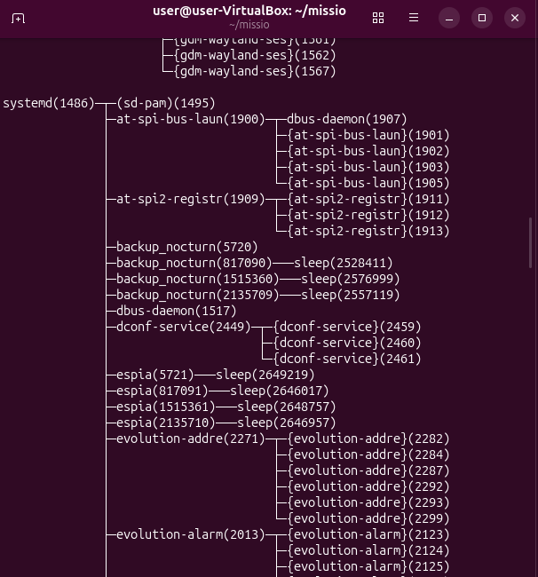
2. Identificar el consum de CPU amb top
La utilitat top mostra informació actualitzada sobre els processos, incloent-hi l’ús de CPU i memòria. A la captura, els dos processos anomenats minador consumeixen una part molt elevada de la CPU, fet que explica la lentitud simulada del servidor.
top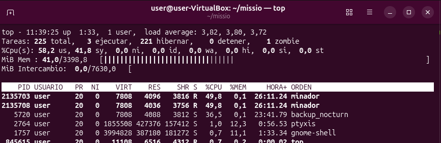
3. Cercar els processos pel nom
La comanda pgrep -l cerca processos a partir del seu nom. En aquest cas, l'expressió regular permet localitzar els processos relacionats amb minador, espia i backup_nocturn, i mostrar-ne els PID.
pgrep -l 'minador|espia|backup'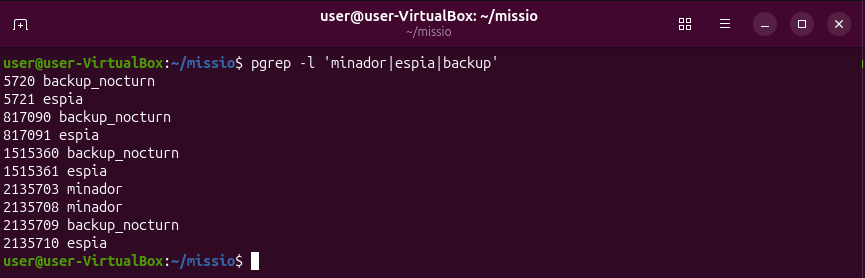
4. Consultar informació detallada amb ps
Amb ps podem consultar el PID, el procés pare (PPID), l'estat, el temps d'execució i el percentatge de CPU. La consulta específica del PID 1486 mostra el procés systemd com a procés pare de la sessió.
ps -o pid,ppid,user,stat,etime,%cpu,comm -C minador,espia,backup_nocturn
ps -o pid,comm -p 1486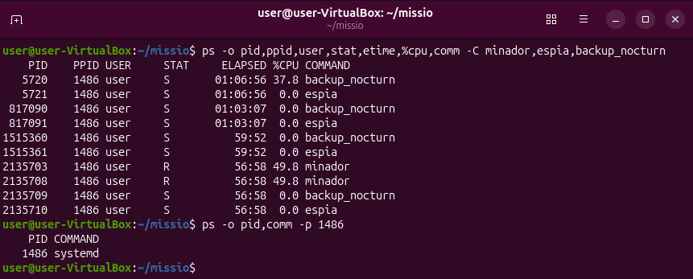
GESTIÓ DE PROCESSOS
Gestió de la descàrrega
1. Executar la descàrrega i aturar-la temporalment
Executem l'script descarrega.sh. Amb Ctrl + Z podem suspendre temporalment el treball que s'està executant en primer pla. La comanda jobs -l mostra els treballs de la sessió i el seu estat.
./descarrega.sh
# Prémer Ctrl + Z
jobs -lPer reprendre el treball en segon pla utilitzem bg %1. Si necessitem tornar-lo al primer pla, utilitzem fg %1. Un segon terminal amb watch permet observar l'evolució del fitxer de progrés.
bg %1
fg %1
watch -n 1 cat progres.txt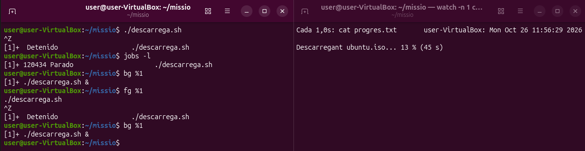
2. Monitorar els processos de la descàrrega
Amb top podem filtrar i observar els processos de la descàrrega i els minadors. La captura mostra que descarrega.sh continua executant-se mentre el fitxer progres.txt indica que la descàrrega encara està en curs.
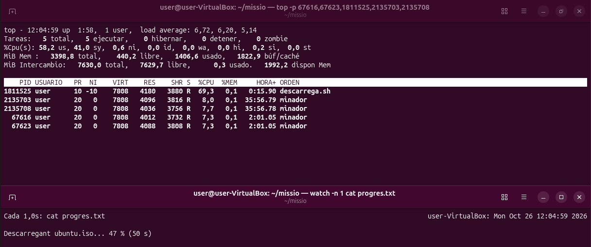
GESTIÓ DE PROCESSOS
Prioritat i senyals dels processos
1. Intentar finalitzar els processos espia
La comanda kill envia per defecte el senyal SIGTERM, que demana al procés que finalitzi. En aquesta simulació, els processos espia continuen apareixent perquè gestionen aquest senyal i no s'acaben amb una petició de finalització normal.
pgrep -l espia
kill 5721 67625 817091 1515361 2135710
pgrep -l espia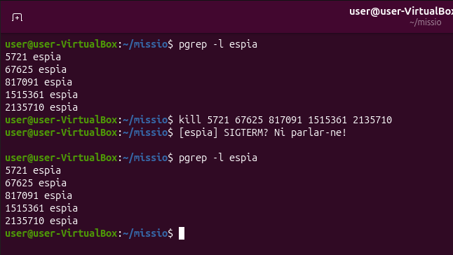
2. Finalitzar forçosament els processos espia
Quan un procés no respon a SIGTERM, es pot utilitzar kill -9, que envia SIGKILL. Aquest senyal no es pot ignorar ni gestionar pel procés. Després, tornem a executar pgrep per comprovar si queden processos amb aquest nom.
kill -9 5721 67625 817091 1515361 2135710
pgrep -l espia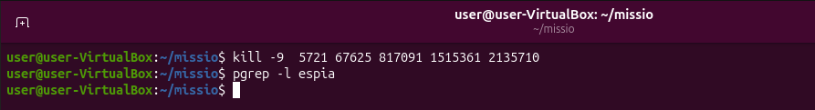
3. Aturar i reprendre backup_nocturn
Els senyals SIGSTOP i SIGCONT permeten aturar i reprendre un procés sense eliminar-lo. L'estat T indica que el procés està aturat; després de SIGCONT, el procés torna a executar-se o a esperar segons el seu funcionament.
kill -STOP 5720
ps -o pid,stat,comm -p 5720
kill -CONT 5720
ps -o pid,stat,comm -p 5720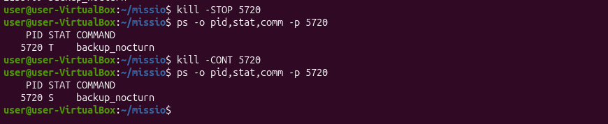
GESTIÓ DE PROCESSOS
Comprovacions finals
1. Comprovar que la descàrrega ha finalitzat
El fitxer progres.txt mostra el missatge «ubuntu.iso COMPLETADA en 35 s». Aquesta sortida confirma que la descàrrega simulada ha arribat al 100 % i ha finalitzat correctament.
cat progres.txt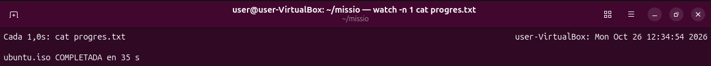
2. Revisar l'arbre del procés de descàrrega
Amb pstree -ps podem consultar els processos antecessors d'un procés concret. La captura mostra la cadena de processos que condueix fins a descarrega.sh, incloent-hi la terminal i l'intèrpret d'ordres que l'han iniciat.
pstree -ps $(pgrep descarrega)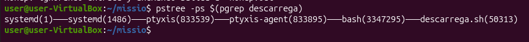
Conclusió
En aquesta pràctica he après a identificar i supervisar processos a Ubuntu mitjançant ps, pgrep, pstree i top. També he practicat la gestió de tasques en primer i segon pla amb jobs, bg i fg, i he comprovat la diferència entre finalitzar un procés, aturar-lo temporalment i reprendre'l mitjançant els senyals SIGTERM, SIGKILL, SIGSTOP i SIGCONT.
Finalment, el fitxer de progrés confirma que la descàrrega de ubuntu.iso s'ha completat. Abans del lliurament, és recomanable verificar amb pgrep que l'estat dels processos restants coincideix amb els requisits de l'enunciat.
APARTAT 04
Sistemes de fitxers
Aquest apartat forma part del Sprint 2. Encara no s'hi ha incorporat documentació perquè les captures i les explicacions facilitades fins ara corresponen a la gestió de processos.
↑ Tornar a l'índex